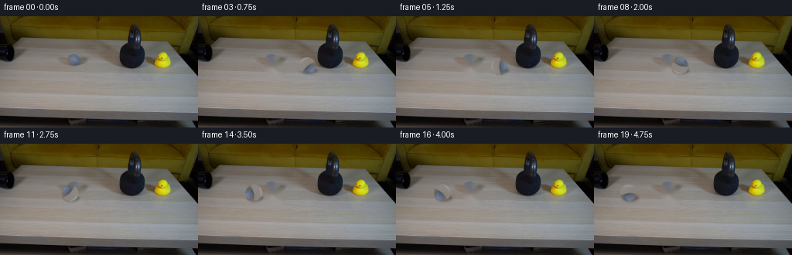
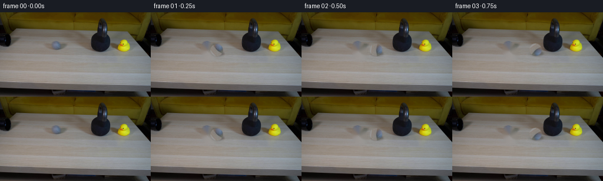
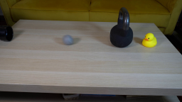
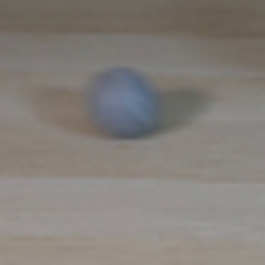
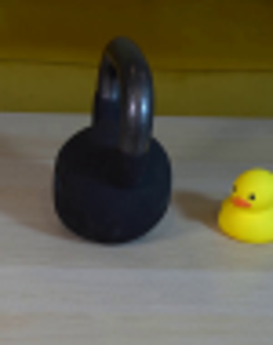
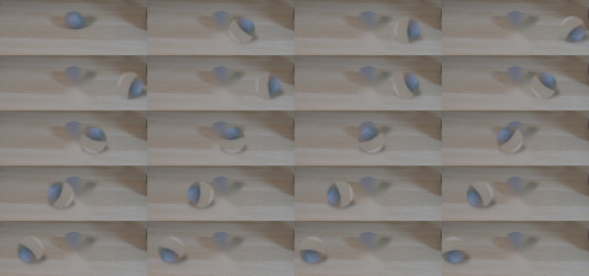
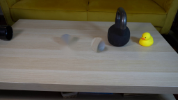
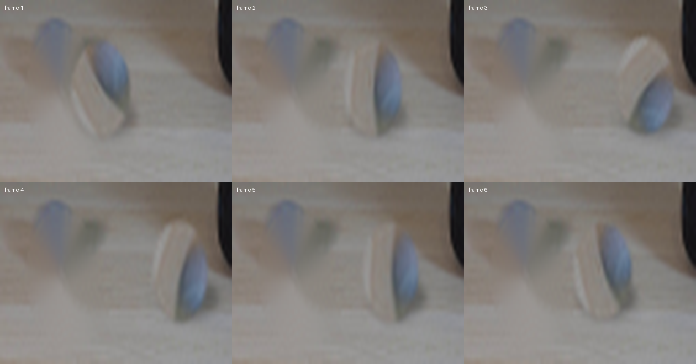
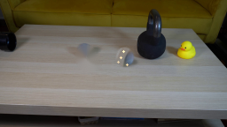

CODING AGENTS AS PIXEL WORLD MODELS
traex/DeepSeek-V4.1-Flash · 0197
点击播放 · 原生 RGB 像素
逐轮保存的候选
回放视频、检查图与代码变化。
每份候选均可单独播放。实际图片检查记录在下方工具轨迹中。
候选 01播放与检查图
点击播放 · 原生 RGB 像素

展开代码变化
--- 上一保存版本
+++ 本次保存版本
@@ -0,0 +1,169 @@
+from pathlib import Path
+
+import cv2
+import numpy as np
+from PIL import Image
+
+import artifact_io
+
+
+CASE_DIR = Path(__file__).resolve().parent
+WIDTH, HEIGHT, FRAME_COUNT, FPS = 256, 144, 20, 4
+BALL_CENTER = np.array([97.0, 64.5])
+BALL_RADIUS = 10.5
+CONTACT_X = 142.0
+
+
+def make_clean_plate(frame: np.ndarray) -> np.ndarray:
+ """Remove the tennis ball and its contact shadow from the first frame."""
+ mask = np.zeros((HEIGHT, WIDTH), dtype=np.uint8)
+ cv2.ellipse(mask, (97, 65), (13, 14), 0, 0, 360, 255, -1)
+ cv2.ellipse(mask, (102, 74), (12, 6), -8, 0, 360, 255, -1)
+ return cv2.inpaint(frame, mask, 3, cv2.INPAINT_TELEA)
+
+
+def extract_ball(frame: np.ndarray) -> tuple[np.ndarray, np.ndarray]:
+ """Extract the shaded ball and a softly antialiased circular matte."""
+ size = 25
+ center = (size - 1) / 2.0
+ yy, xx = np.mgrid[:size, :size]
+ distance = np.hypot(xx - center, yy - center)
+ alpha = np.clip(BALL_RADIUS + 0.7 - distance, 0.0, 1.0)
+ alpha = cv2.GaussianBlur(alpha.astype(np.float32), (3, 3), 0.55)
+
+ x0 = int(round(BALL_CENTER[0] - center))
+ y0 = int(round(BALL_CENTER[1] - center))
+ patch = frame[y0 : y0 + size, x0 : x0 + size].copy()
+ return patch, alpha
+
+
+def rotate_sprite(
+ image: np.ndarray, alpha: np.ndarray, angle: float, scale: tuple[float, float]
+) -> tuple[np.ndarray, np.ndarray]:
+ rgba = np.dstack([image, np.rint(alpha * 255).astype(np.uint8)])
+ sprite = Image.fromarray(rgba, "RGBA")
+ sprite = sprite.rotate(
+ angle, resample=Image.Resampling.BICUBIC, center=((sprite.width - 1) / 2, (sprite.height - 1) / 2)
+ )
+ new_size = (max(1, round(sprite.width * scale[0])), max(1, round(sprite.height * scale[1])))
+ sprite = sprite.resize(new_size, Image.Resampling.BICUBIC)
+ array = np.asarray(sprite)
+ return array[:, :, :3].astype(np.float32), array[:, :, 3].astype(np.float32) / 255.0
+
+
+def paste_sprite(
+ canvas: np.ndarray,
+ sprite: np.ndarray,
+ alpha: np.ndarray,
+ center_x: float,
+ center_y: float,
+ opacity: float = 1.0,
+) -> None:
+ h, w = sprite.shape[:2]
+ x0 = int(round(center_x - (w - 1) / 2))
+ y0 = int(round(center_y - (h - 1) / 2))
+ x1, y1 = x0 + w, y0 + h
+ sx0, sy0 = max(0, -x0), max(0, -y0)
+ dx0, dy0 = max(0, x0), max(0, y0)
+ dx1, dy1 = min(WIDTH, x1), min(HEIGHT, y1)
+ if dx0 >= dx1 or dy0 >= dy1:
+ return
+ sx1, sy1 = sx0 + dx1 - dx0, sy0 + dy1 - dy0
+ a = alpha[sy0:sy1, sx0:sx1, None] * opacity
+ src = sprite[sy0:sy1, sx0:sx1]
+ dst = canvas[dy0:dy1, dx0:dx1]
+ canvas[dy0:dy1, dx0:dx1] = src * a + dst * (1.0 - a)
+
+
+def add_shadow(canvas: np.ndarray, center_x: float, center_y: float, strength: float) -> None:
+ layer = np.zeros((HEIGHT, WIDTH), dtype=np.float32)
+ cv2.ellipse(
+ layer,
+ (round(center_x + 1.5), round(center_y + 5.0)),
+ (10, 4),
+ 0,
+ 0,
+ 360,
+ strength,
+ -1,
+ )
+ layer = cv2.GaussianBlur(layer, (7, 7), 1.35)
+ # Soft contact shadows darken the table without altering its color balance.
+ canvas *= (1.0 - layer[:, :, None])
+
+
+def ball_positions() -> list[tuple[float, float, float, float, float, float]]:
+ """Return center x/y, sprite angle, x-scale, and motion strength per frame."""
+ positions = []
+ x = BALL_CENTER[0]
+ direction = 1.0
+ speed = 15.0
+ angle = 0.0
+ for index in range(FRAME_COUNT):
+ if index == 0:
+ positions.append((x, BALL_CENTER[1], 0.0, 1.0, 0.0))
+ continue
+
+ if x >= CONTACT_X and direction > 0:
+ # The heavy kettlebell barely yields; the elastic tennis ball reverses.
+ x = CONTACT_X
+ direction = -1.0
+ speed = 8.2
+ squash = 0.88
+ else:
+ x += direction * speed
+ if direction > 0:
+ speed = 15.0
+ else:
+ speed *= 0.965
+ squash = 1.0
+
+ if index == 4 and direction < 0:
+ squash = 0.94
+ elif index == 5 and direction < 0:
+ squash = 0.98
+ else:
+ squash = min(squash, 1.0)
+
+ angle -= direction * speed * 3.2
+ stretch = 2.0 - squash
+ positions.append((x, BALL_CENTER[1], angle, squash, stretch, speed))
+ return positions
+
+
+def main() -> None:
+ first = np.asarray(Image.open(CASE_DIR / "first_frame.png").convert("RGB"), dtype=np.uint8)
+ assert first.shape == (HEIGHT, WIDTH, 3)
+
+ clean = make_clean_plate(first).astype(np.float32)
+ ball, ball_alpha = extract_ball(first)
+
+ frames = np.empty((FRAME_COUNT, HEIGHT, WIDTH, 3), dtype=np.uint8)
+ frames[0] = first
+
+ positions = ball_positions()
+ for index in range(1, FRAME_COUNT):
+ x, y, angle, scale_x, scale_y, speed = positions[index]
+ canvas = clean.copy()
+
+ moving_fast = speed > 10.0
+ if moving_fast:
+ for offset, opacity in ((-7.0, 0.08), (-3.5, 0.14)):
+ trail_x = x + offset
+ trail, trail_alpha = rotate_sprite(ball, ball_alpha, angle, (scale_x, scale_y))
+ paste_sprite(canvas, trail, trail_alpha, trail_x, y, opacity)
+
+ shadow_strength = 0.30 if not moving_fast else 0.24
+ add_shadow(canvas, x, y, shadow_strength)
+ sprite, sprite_alpha = rotate_sprite(ball, ball_alpha, angle, (scale_x, scale_y))
+ paste_sprite(canvas, sprite, sprite_alpha, x, y)
+
+ frames[index] = np.clip(canvas, 0, 255).astype(np.uint8)
+
+ # Preserve the source frame byte-for-byte, including its original noise pattern.
+ frames[0] = first
+ artifact_io.save(frames, CASE_DIR)
+
+
+if __name__ == "__main__":
+ main()
候选 02播放与检查图
点击播放 · 原生 RGB 像素

展开代码变化
--- 上一保存版本
+++ 本次保存版本
@@ -41,7 +41,7 @@
image: np.ndarray, alpha: np.ndarray, angle: float, scale: tuple[float, float]
) -> tuple[np.ndarray, np.ndarray]:
rgba = np.dstack([image, np.rint(alpha * 255).astype(np.uint8)])
- sprite = Image.fromarray(rgba, "RGBA")
+ sprite = Image.fromarray(rgba)
sprite = sprite.rotate(
angle, resample=Image.Resampling.BICUBIC, center=((sprite.width - 1) / 2, (sprite.height - 1) / 2)
)
@@ -90,6 +90,21 @@
layer = cv2.GaussianBlur(layer, (7, 7), 1.35)
# Soft contact shadows darken the table without altering its color balance.
canvas *= (1.0 - layer[:, :, None])
+
+
+def add_contact_flash(canvas: np.ndarray, strength: float) -> None:
+ """A few tiny tabletop chips make the high-speed collision legible."""
+ layer = np.zeros((HEIGHT, WIDTH, 3), dtype=np.float32)
+ points = (
+ (139, 58, 0.85),
+ (136, 65, 0.65),
+ (143, 73, 0.75),
+ (133, 70, 0.45),
+ )
+ for x, y, amount in points:
+ cv2.circle(layer, (x, y), 1, (230 * amount, 185 * amount, 105 * amount), -1)
+ layer = cv2.GaussianBlur(layer, (3, 3), 0.45)
+ canvas += layer * strength
def ball_positions() -> list[tuple[float, float, float, float, float, float]]:
@@ -157,6 +172,8 @@
add_shadow(canvas, x, y, shadow_strength)
sprite, sprite_alpha = rotate_sprite(ball, ball_alpha, angle, (scale_x, scale_y))
paste_sprite(canvas, sprite, sprite_alpha, x, y)
+ if index == 4:
+ add_contact_flash(canvas, 0.9)
frames[index] = np.clip(canvas, 0, 255).astype(np.uint8)
候选 03播放与检查图
点击播放 · 原生 RGB 像素

展开代码变化
--- 上一保存版本
+++ 本次保存版本
@@ -107,7 +107,7 @@
canvas += layer * strength
-def ball_positions() -> list[tuple[float, float, float, float, float, float]]:
+def ball_positions() -> list[tuple[float, float, float, float, float, float, float]]:
"""Return center x/y, sprite angle, x-scale, and motion strength per frame."""
positions = []
x = BALL_CENTER[0]
@@ -116,7 +116,7 @@
angle = 0.0
for index in range(FRAME_COUNT):
if index == 0:
- positions.append((x, BALL_CENTER[1], 0.0, 1.0, 0.0))
+ positions.append((x, BALL_CENTER[1], 0.0, 1.0, 1.0, 0.0, direction))
continue
if x >= CONTACT_X and direction > 0:
@@ -142,7 +142,7 @@
angle -= direction * speed * 3.2
stretch = 2.0 - squash
- positions.append((x, BALL_CENTER[1], angle, squash, stretch, speed))
+ positions.append((x, BALL_CENTER[1], angle, squash, stretch, speed, direction))
return positions
@@ -158,13 +158,13 @@
positions = ball_positions()
for index in range(1, FRAME_COUNT):
- x, y, angle, scale_x, scale_y, speed = positions[index]
+ x, y, angle, scale_x, scale_y, speed, direction = positions[index]
canvas = clean.copy()
moving_fast = speed > 10.0
if moving_fast:
for offset, opacity in ((-7.0, 0.08), (-3.5, 0.14)):
- trail_x = x + offset
+ trail_x = x + direction * offset
trail, trail_alpha = rotate_sprite(ball, ball_alpha, angle, (scale_x, scale_y))
paste_sprite(canvas, trail, trail_alpha, trail_x, y, opacity)
可观测工具轨迹
实际执行的命令与返回图片。
命令 1exit 0
/bin/bash -c "pwd && rg --files -g '"'!*node_modules*'"' | sed -n '1,200p'"
命令 2exit 0
/bin/bash -c 'cat prompt.txt'
命令 3exit 0
/bin/bash -c 'cat GENERATION_RULES.md'
命令 4exit 0
/bin/bash -c "command -v ffmpeg; command -v python3; command -v blender; command -v convert; command -v magick; python3 - <<'PY'
try:
import cv2; print('cv2',cv2.__version__)
except Exception as e: print('no cv2',e)
try:
import numpy; print('numpy',numpy.__version__)
except Exception as e: print('no numpy',e)
try:
import PIL; print('PIL',PIL.__version__)
except Exception as e: print('no PIL',e)
try:
import imageio; print('imageio',imageio.__version__)
except Exception as e: print('no imageio',e)
PY"命令 5exit 0
/bin/bash -c "python3 - <<'PY'
from PIL import Image
im=Image.open('first_frame.png')
print(im.size, im.mode)
PY"命令 6exit 0
/bin/bash -c "sed -n '1,240p' artifact_io.py"
命令 7exit 0
/bin/bash -c "sed -n '1,260p' player_template.html"
命令 8exit 0
/bin/bash -c "python3 - <<'PY'
from PIL import Image
im=Image.open('first_frame.png')
im.crop((70,35,125,90)).resize((440,440)).save('.tmp/ball_zoom.png')
im.crop((140,0,215,95)).resize((450,570)).save('.tmp/kettle_zoom.png')
im.crop((0,35,35,95)).resize((280,480)).save('.tmp/pipe_zoom.png')
PY"命令 9exit 0
/bin/bash -c "python3 generate.py && python3 - <<'PY'
from pathlib import Path
from PIL import Image
import numpy as np
p=Path('frames')
f=np.asarray(Image.open('first_frame.png'))
g=np.asarray(Image.open(p/'00.png'))
print('identical:',np.array_equal(f,g),'shape:',g.shape)
for i in [0,1,2,3,4,5,8,12,19]:
im=np.asarray(Image.open(p/f'{i:02d}.png'))
print(i, 'mean', round(float(im.mean()),2), 'diff', int(np.abs(im.astype(int)-f.astype(int)).mean()))
PY"命令 10exit 0
/bin/bash -c "python3 - <<'PY'
from PIL import Image, ImageDraw
import numpy as np
ims=[]
for i in range(20):
im=Image.open(f'frames/{i:02d}.png').crop((35,40,155,85)).resize((360,135),Image.Resampling.NEAREST)
ims.append(im)
out=Image.new('RGB',(360*4,135*5),(25,25,25))
for i,im in enumerate(ims): out.paste(im,((i%4)*360,(i//4)*135))
out.save('.tmp/motion_strip.png')
PY"命令 11exit 0
/bin/bash -c "python3 - <<'PY'
from PIL import Image, ImageDraw
indices=[1,2,3,4,5,6]
sheet=Image.new('RGB',(420*3,330*2),(30,30,30))
for j,i in enumerate(indices):
im=Image.open(f'frames/{i:02d}.png').crop((75,45,160,85)).resize((420,330),Image.Resampling.LANCZOS)
d=ImageDraw.Draw(im); d.text((8,8),f'frame {i}',fill=(255,255,255))
sheet.paste(im,((j%3)*420,(j//3)*330))
sheet.save('.tmp/contact_zoom.png')
PY"命令 12exit 0
/bin/bash -c "python3 generate.py && python3 - <<'PY'
from PIL import Image
import numpy as np
from pathlib import Path
f=np.asarray(Image.open('first_frame.png'))
frames=np.stack([np.asarray(Image.open(f'frames/{i:02d}.png')) for i in range(20)])
print('frames',frames.shape,frames.dtype)
print('frame0 exact',np.array_equal(frames[0],f))
print('unique per frame', [len(np.unique(frames[i].reshape(-1,3),axis=0)) for i in range(20)])
print('consecutive mean diffs',[round(float(np.abs(frames[i].astype(int)-frames[i-1].astype(int)).mean()),3) for i in range(1,20)])
print('index bytes',Path('index.html').stat().st_size,'npz',Path('pixels.npz').stat().st_size)
PY"命令 13exit 0
/bin/bash -c "python3 - <<'PY'
import numpy as np
from PIL import Image
frames=np.stack([np.asarray(Image.open(f'frames/{i:02d}.png')) for i in range(20)])
# Compute changed pixel bbox in ball corridor for each frame.
base=frames[0]
for i in range(1,20):
d=np.max(np.abs(frames[i].astype(np.int16)-base.astype(np.int16)),axis=2)
ys,xs=np.where(d>8)
if len(xs): print(i, (int(xs.min()),int(ys.min()),int(xs.max()),int(ys.max())),len(xs))
PY"命令 14exit 0
/bin/bash -c "command -v chromium; command -v chromium-browser; command -v google-chrome; command -v firefox; node -e \"try{console.log(require.resolve('playwright'))}catch(e){console.log('no playwright')}\""命令 15exit 0
/bin/bash -c "python3 generate.py && python3 - <<'PY'
import json,re
from pathlib import Path
from PIL import Image
import numpy as np
p=Path('.')
f=np.asarray(Image.open('first_frame.png'))
g=np.asarray(Image.open('frames/00.png'))
h=Path('index.html').read_text()
print('frame0 exact:',np.array_equal(f,g))
print('html ready marker:', 'window.__pixelReady=true' in h)
print('frames:',len(list(Path('frames').glob('*.png'))), 'index:',Path('index.html').stat().st_size)
print('has task_spec:',Path('task_spec.json').exists())
PY"命令 16exit 0
/bin/bash -c "python3 - <<'PY'
import base64, json, re
from pathlib import Path
import numpy as np
from PIL import Image
html=Path('index.html').read_text()
m=re.search(r'const DATA=(\\{.*?\\}),W=DATA.width',html)
assert m
D=json.loads(m.group(1))
def unpack(s):
b=base64.b64decode(s)
return np.frombuffer(b,dtype='<u4').copy()
frames=[unpack(D['first'])]
for packet in D['deltas']:
cur=frames[-1].copy(); p=unpack(packet); i=0
while i<len(p):
start,count=int(p[i]),int(p[i+1]); i+=2
cur[start:start+count]=p[i:i+count]; i+=count
frames.append(cur)
recon=np.stack(frames).reshape(20,144,256)
recon=np.stack([(recon>>16)&255,(recon>>8)&255,recon&255],axis=-1).astype(np.uint8)
actual=np.stack([np.asarray(Image.open(f'frames/{i:02d}.png')) for i in range(20)])
print('player reconstruction exact:',np.array_equal(recon,actual))
print('rgb range:',int(actual.min()),int(actual.max()),'dtype:',actual.dtype)
print('first frame exact:',np.array_equal(actual[0],np.asarray(Image.open('first_frame.png'))))
PY
python3 -m py_compile generate.py
git status --short 2>/dev/null || true"命令 17exit 0
/bin/bash -c "python3 - <<'PY'
from pathlib import Path
from PIL import Image
import numpy as np
files=sorted(Path('frames').glob('*.png'))
print('frames',len(files))
print('sizes',sorted(set(Image.open(p).size for p in files)))
a=np.stack([np.asarray(Image.open(p)) for p in files])
print('array',a.shape,a.dtype)
print('frame0 exact',np.array_equal(a[0],np.asarray(Image.open('first_frame.png'))))
print('files',[(p.name,p.stat().st_size) for p in [Path('generate.py'),Path('pixels.npz'),Path('index.html'),Path('inspection.png')]])
PY"视觉工具实际返回图片 1

视觉工具实际返回图片 2

视觉工具实际返回图片 3

视觉工具实际返回图片 4
视觉工具实际返回图片 5

视觉工具实际返回图片 6
视觉工具实际返回图片 7

视觉工具实际返回图片 8

视觉工具实际返回图片 9
视觉工具实际返回图片 10

视觉工具实际返回图片 11
视觉工具实际返回图片 12

视觉工具实际返回图片 13
视觉工具实际返回图片 14

视觉工具实际返回图片 15

保存候选 3 份；完成命令 17 次；可验证图片返回 15 张。原始 API 响应与完整日志保留在本地。